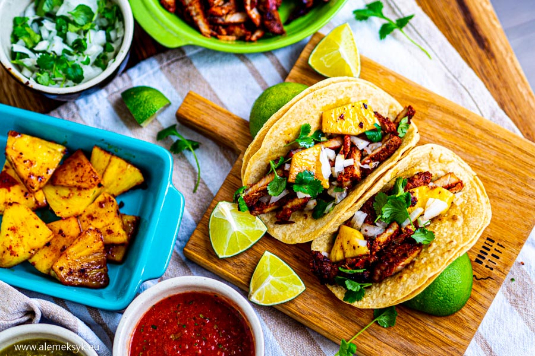

Składniki na marynatę:
- 15 g. papryczki chili guajillo (około 1 szt.)
- 15 g. pasty achiote
- 30 ml soku z ananasa
- 30 ml soku pomarańczowego
- 30 ml octu jabłkowego
- 2 ząbki czosnku
- 1/2 łyżeczki oregano
- 1/4 łyżeczki mielonego kminu rzymskiego
- 1/8 łyżeczki pieprzu
- 1 goździk
- 1/2 łyżeczki soli
- 1/2 łyżeczki epazote
- 1/8 łyżeczki cynamonu
- 1/4 cebuli
Składniki na tacos:
- 500 gramów dobrej jakości łopatki wieprzowej
- sól i pieprz do smaku
- 1/2 białej cebuli
- świeży ananas
- garść świeżej kolendry
- 6 tortilli kukurydzianych

Jak przygotować Tacos al Pastor?
Przygotowanie marynaty w stylu al pastor.
Tajemnicą dobrego al pastor jest niewątpliwie marynata, z odpowiednio dobranymi składnikami. Jest to podstawa i tyle w temacie. Nie ma marynaty, nie ma al pastor. Każdy lokal w Meksyku ma swoją “tajemniczą” mieszankę do marynaty, czym się właśnie mocno charakteryzują, ale bez obaw, spokojnie możecie przygotować marynatę dość uniwersalną, która z pewnością przypadnie do gustu wielu tacożercom.
Na początku należy zająć się papryczką guajillo. W tym celu należy zagotować w garnku trochę wody i wrzucić do niej pozbawioną nasionek papryczkę guajillo. Gotujemy ją przez kilka minut. Papryczka w tym czasie musi zmienić wygląd z suchej pomarszczonej, na jędrną i napuchniętą. Zadaniem papryczki guajillo jest nadanie marynacie nie tylko genialnego smaku, ale również koloru czerwonego.
W czasie jak papryczka się gotuje w garnku, możemy zabrać się za przyprawy. Wszystkie suche przyprawy warto utrzeć w moździerzu. Nie tylko się drobno rozetrą, ale również połączą smaki.
Do moździerza (w meksyku jest to molcaajete) wrzucamy oregano, kmin rzymski (nie mylić z kminkiem!), pieprz, goździki, sól, epazote (niestety ciężko dostać w Polsce - ostatecznie możecie pominąć) i cynamon. Wszystko rozcieramy na drobny proszek.
Jak już macie przygotowany miks przypraw, a papryczka guajillo napuchnie, wrzucamy do blendera. Tak więc w blenderze powinny się znaleźć: Miks przypraw, papryczka guajillo, pasta achiote, sok z ananasa, sok z pomarańczy, ocet jabłkowy, czosnek i cebula. Wszystko blendujemy na jednolitą masę.
Przygotowanie mięsa do tacos al pastor
Jak mamy już przygotowaną marynatę, zabieramy się za mięso. Zazwyczaj używamy łopatki wieprzowej, ale spokojnie można również użyć karkówki. Mięso należy pociąć w bardzo cienkie plasterki. To jest jeden z warunków dobrego al pastor przygotowywanego na domowej patelni. Pamiętajcie, że im cieńsze paseczki, tym szybciej się usmażą oraz będą przypominać klasyczne wydanie taco al pastor.
Pocięte w cienko kawałki mięso dokładnie obtaczamy w marynacie i owinięte w folię spożywczą wkładamy na kilka godzin do lodówki. Najlepiej na 24 godziny.
Zamarynowane mięso smażymy na patelni. Przed tym pamiętajcie, żeby nagrzać na niej oliwę.
Mięso smażymy około 2 minut z każdej strony. Nie smażcie zbyt długo, ponieważ mięso zrobi się gumowate, a ma być przecież miękkie i soczyste. Cienko pokrojona wieprzowina smaży się naprawdę szybko.
Ananasa kroimy w pasterki. Można je podsmażyć w całości na patelni (najlepiej osobnej), a następnie pokroić na mniejsze kawałki. Jeśli jesteście trochę leniwi, możecie przygotować na tej samej patelni co smażone jest mięso. Prawdę powiedziawszy wychodzi to o wiele lepiej, ponieważ mięso przechodzi smakiem ananasa, a ananas smakiem marynaty, generalnie właśnie tak jak być powinno.
Mięso zdejmujemy z patelni i kroimy na cieniutkie paseczki.
Teraz pozostaje tylko podgrzać tortille
Mięso układamy na tortillach, a na nim koniecznie kawałki grillowanego/smażonego ananasa. Bez niego tacos al pastos zwyczajnie nie ma prawa bytu.
Tacos al pastor podajemy z drobno posiekaną białą cebulą, poszatkowana świeżą kolendrą, a do skropienia używamy świeżej limonki.
Tacos al pasto podaje się również z salsami. Możecie do tego wykorzystać salsę verde, salsę rojo, albo salsę pico de gallo.
Źródła